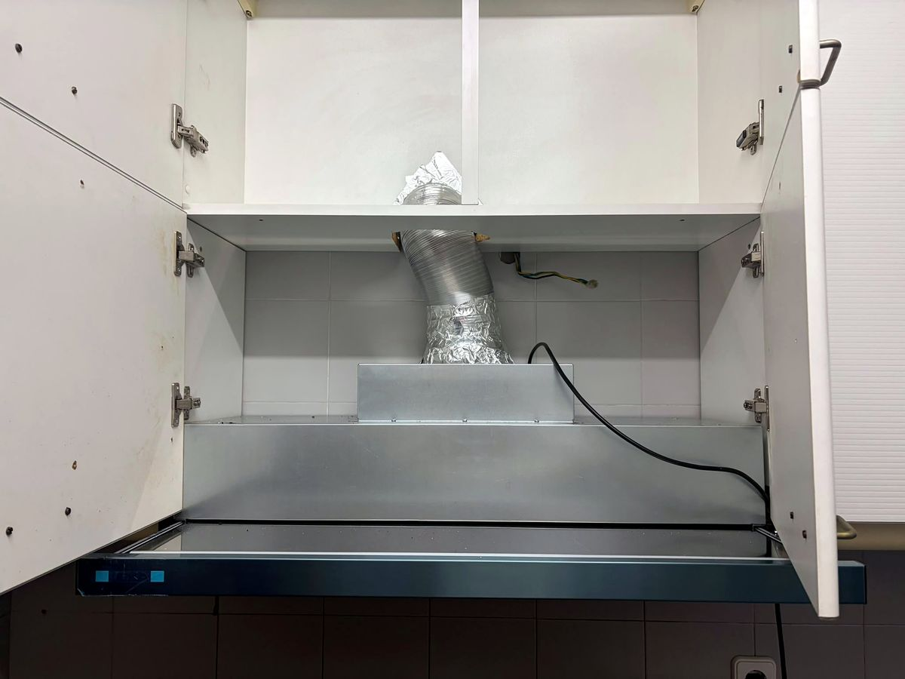
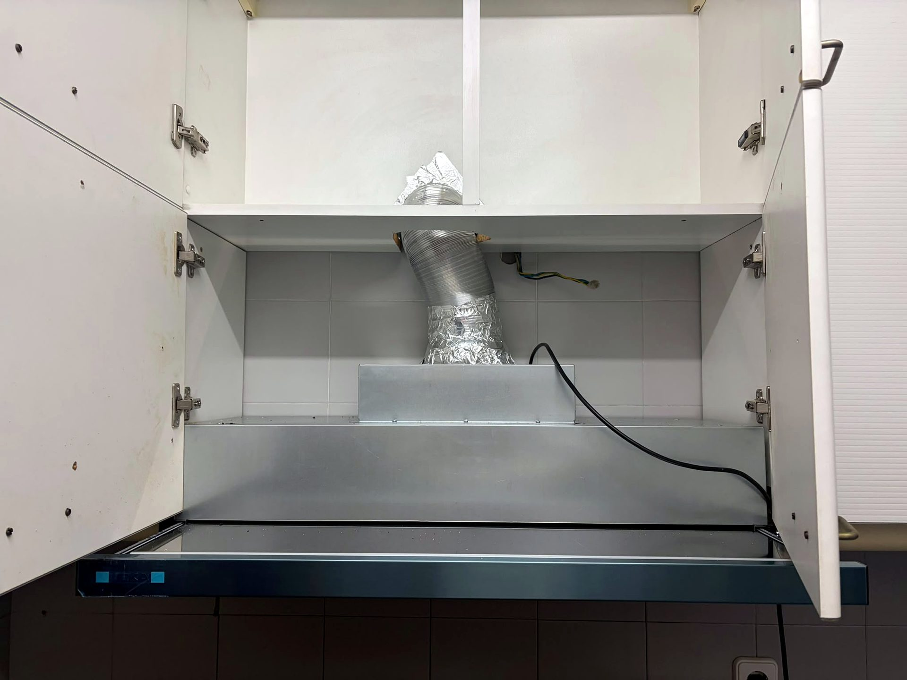

Armário de cozinha ajustado ao exaustor
Armário superior ajustado para dar passagem ao tubo do exaustor.

O desafio
O tubo do exaustor tinha de passar pelo armário superior.
A nossa solução
Fizemos o recorte no armário para o tubo e mantivemos a frente igual.
O resultado
Tubo escondido dentro do armário.
Destaques
- Recorte para o tubo
- Frente igual
- Tubo escondido

→